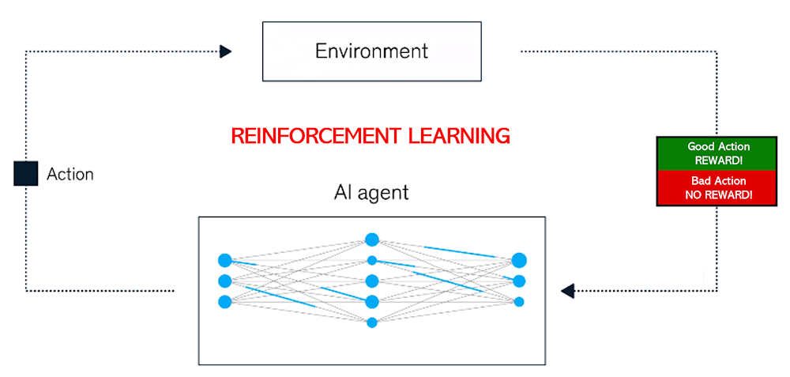

What is AI (Artificial Intelligence?)
Artificial Intelligence (AI) refers to the simulation of human intelligence by machines, specifically
computer systems. This includes tasks like problem-solving, learning, reasoning, and understanding
language. AI aims to create machines that can perform tasks autonomously, adapt to new information,
and improve over time. Rather than relying on explicit instructions, AI systems often learn from data
and make decisions or predictions based on patterns they discover.

Types of AI: Narrow vs. General AI
AI can be divided into two categories: Narrow AI and General AI. Narrow AI (also known as Weak AI) is
designed to perform specific tasks, like facial recognition or playing chess, and is the most common
form of AI today. These systems excel at the task they are trained on but cannot perform other
functions outside their design. General AI, on the other hand, refers to a type of AI that could perform
any intellectual task that a human can do. This remains theoretical, and we have yet to build a
machine that can match human-like versatility and cognitive ability.

Machine Learning: How AI Learns
Machine Learning (ML) is a subset of AI that allows computers to learn from data without being
explicitly programmed. Instead of following pre-set instructions, ML algorithms analyze data and
identify patterns, using these patterns to make decisions or predictions. For example, an ML model
can be trained to recognize cats in photos by analyzing a large set of labeled images. The more data
the system is exposed to, the better it becomes at understanding and predicting future data.
Supervised and Unsupervised Learning
In Supervised Learning, the model is trained on labeled data, meaning that the input data comes with
the correct output. The algorithm learns to map the input to the desired output, allowing it to make
predictions on new, unseen data. For example, in a spam email classifier, each email in the training
dataset is labeled as "spam" or "not spam." In contrast, Unsupervised Learning involves training a
model on data that has no labels. The goal is to find hidden patterns or structures within the data,
such as grouping similar items together in clusters (clustering), like categorizing customers based on
their purchasing habits.
Neural Networks and Deep Learning
Neural Networks are computational models inspired by the human brain. They consist of layers of
interconnected "neurons" that process data, making them effective at recognizing patterns. Each
neuron in the network performs a simple operation, and when combined, these networks can tackle
complex tasks. Deep Learning refers to neural networks with many layers, which allows them to
analyze data at increasingly complex levels. Deep learning has revolutionized fields like image
recognition, speech processing, and natural language understanding due to its ability to handle large,
unstructured datasets, such as photos and voice recordings.
Reinforcement Learning: Learning from Experience
Reinforcement Learning (RL) is a type of machine learning where an agent learns by interacting with its
environment and receiving feedback in the form of rewards or penalties. The goal of the agent is to
maximize its total reward over time, learning from the outcomes of its actions. RL is used in areas like
robotics, video game AI, and autonomous vehicles, where the system must navigate complex
environments and make decisions based on trial and error. For instance, a robot might learn to walk by
receiving a reward each time it moves forward and a penalty when it falls.

Natural Language Processing (NLP)
Natural Language Processing (NLP) is the field of AI that enables computers to understand, interpret,
and generate human language. NLP combines linguistics and machine learning to process text or
speech data, making it possible for machines to read, understand, and respond to human
communication. NLP powers technologies like voice assistants (Siri, Alexa), translation services, and
sentiment analysis. Key challenges in NLP include dealing with language nuances such as slang,
context, and sarcasm, which require AI to be able to understand the subtleties of human
communication.
AI in Everyday Life
AI is already a part of our daily lives in various forms, often without us even realizing it. AI powers
personalized recommendation systems on platforms like Netflix, YouTube, and Amazon, suggesting
products or content based on our preferences and past behavior. In social media, AI curates posts on
our feeds, detects harmful content, and targets ads. AI is also integrated into personal devices, such
as smartphones, which use voice recognition to understand commands. Additionally, AI helps
improve services like banking, healthcare, and customer support, making tasks more efficient and
personalized.

Ethical Challenges in AI
As AI becomes more integrated into society, it raises important ethical questions. One major concern
is bias in AI algorithms. If an AI system is trained on biased data, it can perpetuate or even amplify
those biases in its predictions or decisions. This has been seen in areas like hiring, criminal justice,
and facial recognition, where biased models can lead to unfair outcomes. Privacy is another concern,
as AI systems often require vast amounts of personal data. There’s also the issue of job
displacement, as AI automates tasks previously done by humans. Addressing these challenges
requires thoughtful regulation, transparency, and accountability.
The Future of AI and Its Impact
The future of AI holds incredible potential to transform industries like healthcare, transportation,
education, and entertainment. For example, AI could assist doctors in diagnosing diseases more
accurately, help self-driving cars navigate roads safely, and offer personalized learning experiences for
students. However, the widespread adoption of AI also brings challenges, including ethical
considerations, safety, and the potential for increased inequality. As AI continues to evolve, it will be
crucial to balance innovation with responsible development, ensuring that the benefits of AI are
shared equitably while minimizing its risks.

Quiz: Test Your Knowledge